CLAUDE’S PICK


X Algorithm: For You 피드 알고리즘 오픈소스 공개
X의 For You 피드 추천 알고리즘이 GitHub에서 공개되어 개발자들의 검증과 기여를 받을 수 있게 되었다. 이 알고리즘은 팔로우 계정의 콘텐츠와 머신러닝 기반 발견 콘텐츠를 결합하고, 트랜스포머 모델로 게시물을 순위 매기며, 다양한 사용자 행동(좋아요, 공유, 신고 등)을 가중치로 반영하여 개인화된 피드를 구성한다.
핵심 포인트: 핵심 기여: 소셜 미디어 추천 시스템의 투명성 강화를 위해 For You 피드 핵심 알고리즘을 완전 공개하고, 가중치 기반 확률 예측 메커니즘에 대한 명확한 코드 주석과 설명을 제공하여 알고리즘의 오해를 해결했다.
🔗 github.com/xai-org/x-algorithm#scoring-an…
GitHub

Diagram Design — 38가지 에디토리얼 다이어그램 템플릿 라이브러리
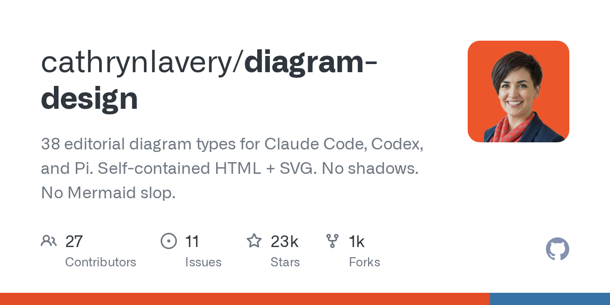
기존 다이어그램 도구들의 제약을 극복하기 위해 설계된 라이브러리. HTML과 SVG 기반의 38가지 에디토리얼 다이어그램 타입을 제공하여 Claude Code 등 AI 에이전트가 코드 요청으로 고품질 다이어그램을 자동 생성할 수 있게 한다. Mermaid의 부족함을 보완하면서도 Figma나 Draw.io 같은 복잡한 UI 없이 순수 코드 기반으로 플로우차트, 산키, 워들리맵, 데이터베이스 스키마 등 다양한 시각화를 제공한다.
핵심 포인트: 핵심 기여: 38가지 다이어그램 타입을 셀프 포함된 HTML 형식으로 제공하며, 시맨틱 패턴으로 레이아웃과 동작을 분리하여 유형 확장 없이 재사용 가능. AI 에이전트 스킬로 등록하여 일반 사용자도 복잡한 디자인 과정 없이 프로덕션 수준의 다이어그램을 자동 생성.
🔗 github.com/cathrynlavery/diagram-design
기타 (Others)
Low-Precision Retrieval: 16비트 검색 모델의 동점 문제 해결
검색 모델에서 16비트 정밀도를 사용할 때 유사도 점수가 0.5~1.0 범위에서 129개의 고유값만 표현 가능해 많은 문서가 동일한 점수로 묶이는 문제가 발생한다. 이로 인해 평가 지표가 최대 38%p까지 변동하고 성능이 과대평가된다. Yang et al.의 연구는 스코링 함수 직전 로짓을 FP32로 업캐스트하는 High-Precision Scoring 방식을 제안하여 모델 효율성을 유지하면서 동점 문제를 최소화한다. 이 솔루션은 MTEB와 Sentence-Transformers 라이브러리에 자동 적용되었다.
핵심 포인트: 핵심 기여: BF16 정밀도에서 발생하는 동점 문제를 FP32 업캐스트로 거의 무비용으로 해결하며, MIRACL 데이터셋 기준 MRR@10에서 최대 38%p의 평가 지표 변동성을 제거하고 검색 모델의 신뢰성 있는 평가 프로토콜 확립.
🔗 linkedin.com/posts/kisu-yang_요즘은-16-bit를…
기타 (Others)
AI & RESEARCH
Sentence Transformers v6 — 다중벡터 임베딩으로 의미검색 정확도 향상
기존 임베딩 모델은 문서와 쿼리 각각을 단일 벡터로 인코딩하는 양방향 인코더 방식으로 의미검색을 수행했다. Sentence Transformers v6는 ColBERT 기반의 다중벡터 임베딩 모델을 도입하여, 문서와 쿼리의 각 토큰마다 여러 벡터를 생성하고 MaxSim 유사도를 통해 세밀한 의미 매칭을 구현한다. 이는 벡터 쌍의 단순 유사도 계산이 아닌 벡터 시퀀스 간 매칭으로 평균화에 따른 정보손실을 피하고 RAG 시스템의 검색 정확도를 크게 향상시킨다.
핵심 포인트: 핵심 기여: 다중벡터 임베딩의 후기상호작용 방식으로 세밀한 토큰 단위 의미 매칭을 실현하여 기존 양방향 인코더 대비 의미검색 정확도를 획기적으로 개선.
🔗 linkedin.com/posts/niels-rogge-a3b7a3127…
기타 (Others)

GRIP: RAG의 질의 지배 문제를 용량 비대칭으로 해결
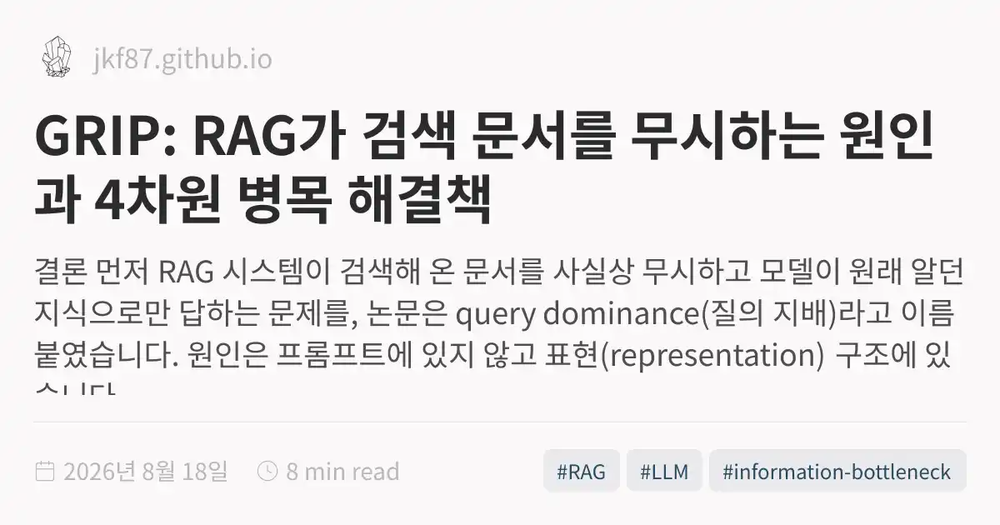
RAG 시스템이 검색 문서를 무시하고 원래 알던 지식으로만 답하는 query dominance 문제를 해결하는 논문. 질의는 전 차원으로 전달하되 검색 증거는 4차원 확률적 병목만 통과하도록 제한하여, 질의가 이미 제공하는 정보의 복사를 방지하고 새로운 정보만 흐르게 함. HotpotQA에서 7.2 EM 향상, 환각률 73% 감소, 질의-잠재 상호정보량을 14.8 bits에서 0.47 bits로 30배 감소시킴.
핵심 포인트: 핵심 성과: 5개 벤치마크 전부 최고 baseline 갱신, 환각률 31.7%에서 8.6%로 감소(73% 감소), 병목 벡터 제거 시 정확도 35.3점 하락으로 메커니즘 검증 완료.
🔗 jkf87.github.io/posts/2026-08-18-grip-que…
기타 (Others)
J-Space Cognition Suite: 추론시간 제어로 DeepSeek V4 Pro 성능 2배 향상
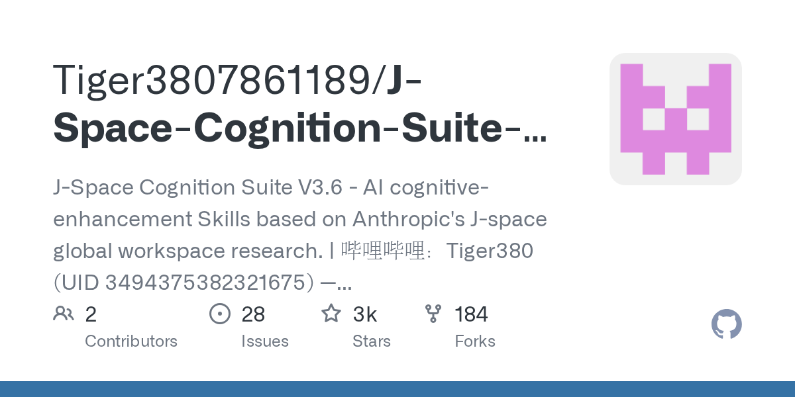
기존 LLM은 모델 능력 자체의 부족이 아니라 내부 작업 공간의 병목으로 인해 다단계 추론 성능이 저하되는 문제를 마주한다. J-Space Cognition Suite는 추론 시점에서 모델 가중치 수정 없이 텍스트 규칙 기반으로 LLM의 좁은 작업 공간을 관리하는 제어 시스템이다. 5줄 장부에 목표와 핵심을 기록하고 도구 호출 시마다 상태를 복원하는 방식으로, DeepSeek V4 Pro와 결합했을 때 HLE 벤치마크에서 67.7점으로 Fable 5의 63.0을 초과하고 토큰당 성능을 2.21배 향상시켰다.
핵심 포인트: 핵심 성과: 모델 재학습 없이 추론시간 제어만으로 HLE 점수 +4.7 향상(63.0→67.7), 점수/토큰 효율 2.21배, 점수/시간 효율 2.53배 달성. 핵심 기여: LLM 내 1~2개 개념만 처리 가능한 J-Space(작업 공간)를 장부식 메모리로 관리하여 장기 추론 중 목표 흐림 방지 및 중단 후 복구 가능.
🔗 github.com/Tiger3807861189/J-Space-Cognit…
GitHub
Anthropic — Claude 워터마크는 주사위만 바꾼다
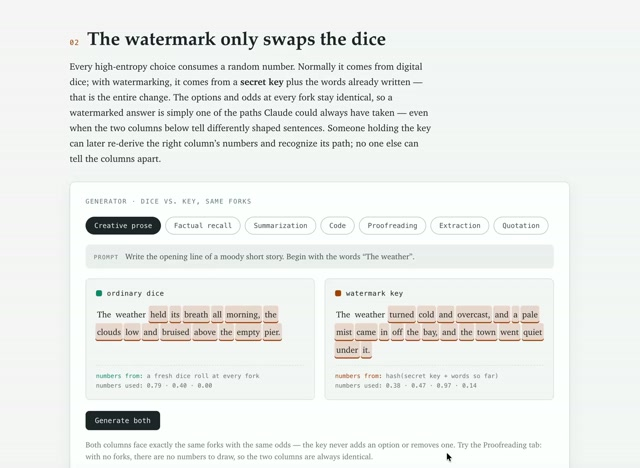
생성형 AI의 출처를 검증하기 위해 워터마크를 삽입할 때 기존 방식은 생성된 텍스트에 명시적 표시를 붙이거나 추가 정보를 인코딩하는 방식이었다. 앤트로픽의 워터마크 기법은 이와 다르게 다음 단어 선택 시 사용하는 난수 생성 규칙에 특정 패턴을 내장하는 방식으로 동작하며, 이를 통해 출력 문장의 의미와 내용은 보존하면서도 생성된 텍스트임을 감지할 수 있다.
핵심 포인트: 핵심 기여: 워터마크된 답변과 일반 답변이 동일한 의미와 문법을 유지하면서도 숨겨진 패턴으로 생성 여부를 식별 가능하게 하여, 기존 명시적 마킹 방식보다 사용자 경험을 해치지 않으면서도 진위 검증을 실현.
🔗 claude.ai/code/artifact/803916fd-3bc1-465…
기타 (Others)
GEM: 추론 기반 생성형 임베딩으로 RAG 검색 정확도 향상

기존 RAG 시스템은 키워드 매칭에만 의존해 사용자의 실제 의도를 반영하지 못하는 문제가 있다. GEM은 생성과 임베딩을 단일 모델로 통합하여 검색 전 쿼리의 숨은 의도를 먼저 추론한 후 관련성 기준을 명시적으로 고려하여 인코딩하는 방식으로 이를 해결한다. 대형 언어모델과 비등한 검색 정확도를 달성하면서도 효율적인 RAG 파이프라인 구축을 가능하게 한다.
핵심 포인트: 핵심 기여: 생성과 임베딩의 통합 모델로 사용자 의도 추론 후 검색 수행하는 구조 제안, 대형 모델들과 비등한 검색 정확도 달성으로 효율적 RAG 구축 실현.
논문 (Papers)
Claude — Anthropic의 AI 생성 텍스트 워터마크 기술 공개
Anthropic이 Claude 모델에 적용할 텍스트 워터마크 기술을 공개했다. EU AI Act 규제 준수를 위해 개발된 이 기술은 숨은 문자나 메타데이터를 추가하지 않고, 비밀키와 문맥을 이용해 단어 선택에 특정 패턴을 남긴다. 탐지기는 장문에서 누적된 통계 패턴을 분석해 Claude가 작성했을 가능성을 판별하며, 짧은 글이나 경미한 편집에서는 탐지 난이도가 높다. 2026년 8월 이후 출시되는 새로운 Claude 모델부터 적용되며, 기존 모델에도 단계적으로 확대될 예정이다.
핵심 포인트: 핵심 기여: 글의 품질이나 내용에 영향을 주지 않으면서도 비밀키 기반 단어 선택 패턴으로 AI 생성 여부를 통계적으로 검증하는 방식 구현, 텍스트 복사 후에도 워터마크 유지 및 문맥별 패턴 변동으로 우회 난이도 증가.
🔗 anthropic.com/news/claude-text-watermark
기타 (Others)
Anthropic Model 2 — 내부 재귀적 자기개선으로 R&D 주기 단축
앤트로픽이 공개하지 않는 내부 전용 모델 Model 2를 개발하여 AI 연구개발 과정의 자동화를 추진하고 있다. 이 모델은 코드 작성, 실험 오류 수정, 학습 데이터 생성 등 개발 인프라 전반에 투입되면서 현세대 AI가 다음세대를 만드는 재귀적 자기개선 구조를 형성하고 있다. 생성된 코드, 실패 실험 데이터, 평가 문제 등이 외부 공개 없이 내부 자산으로 축적되어 앤트로픽의 R&D 주기를 단축하는 핵심 경쟁 우위로 작동하고 있다.
핵심 포인트: 핵심 성과: 실제 제품 코드의 대부분을 이제 Claude가 작성하며, 내부 모델이 축적한 코드베이스와 실험 데이터가 모델 가중치만큼 중요한 자산이 되어 연구개발 주기 단축을 가속화하고 있다.
🔗 www-cdn.anthropic.com/f61d49fa5596956a5de…
기타 (Others)
GLM-5.3: 코딩과 에이전트 성능 강화한 Z.ai의 신규 모델
중국 AI 기업 Z.ai가 공개한 GLM-5.3은 기존 743B 파라미터 베이스 모델에 후속 학습을 추가하여 코딩, 에이전트, 사이버 보안 성능을 대폭 향상시켰다. 새로운 사전학습 없이도 Terminal-Bench 3.0에서 전작 대비 6배 성능 향상을 달성했으며, 오픈 모델 비교 9개 벤치마크 중 8개에서 1위를 기록했다. 현재 GLM Coding Plan과 ZCode에서 즉시 사용 가능하며, API와 오픈웨이트는 안전 평가를 거쳐 순차적으로 공개될 예정이다.
핵심 포인트: 핵심 성과: Terminal-Bench 3.0에서 전작 대비 6위 성능 향상, DeepSWE 66.9, Agents’ Last Exam 28.5 달성, 오픈 모델 벤치마크 9개 중 8개 1위 기록. 제한된 칩 자원 속에서 후속 학습만으로 최신 모델 성능 수준에 근접한 추론 효율성 실현.
기타 (Others)
Gemini 3.7 Flash — 3주 만에 성능 대폭 개선한 구글의 경량 AI 모델
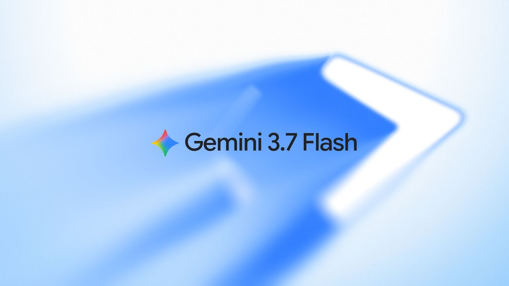
구글이 Gemini 3.6 Flash 출시 3주 만에 3.7 Flash를 공개했다. 코딩 평가 벤치마크에서 DeepSWE는 49.0%에서 65.3%로, FrontierCode는 34.4%에서 43.6%로 향상되었으며, 가격은 절반으로 인하되었다. 사전학습을 재실행하지 않고도 알고리즘 혁신만으로 소프트웨어 엔지니어링, 지식 작업, 웹 개발 워크플로우 전반에 걸쳐 실질적인 성능 개선을 달성했다.
핵심 포인트: 핵심 성과: 3주 만의 마이너 업데이트에서 DeepSWE 벤치마크 16.3포인트 상승, WebDev Arena 순위 19위에서 8위로 상향, 토큰 당 가격을 50% 인하하면서 동시에 성능 향상 달성.
🔗 blog.google/innovation-and-ai/models-and…
블로그 (Blog)
DEVTOOLS & OPEN SOURCE
Herdr — 코딩 에이전트를 위한 세션 관리 런타임
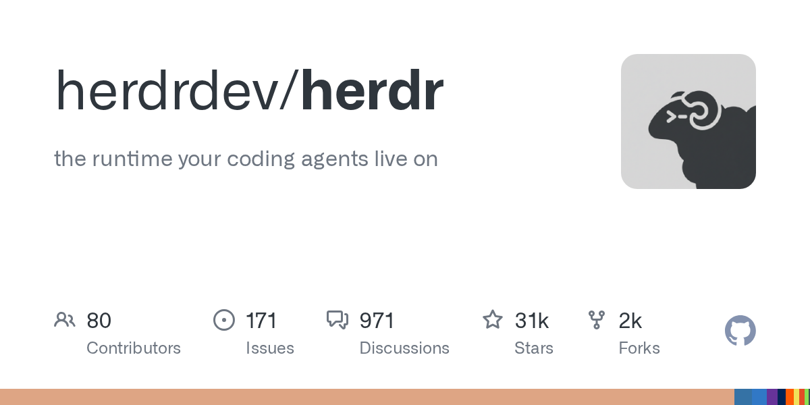
여러 AI 코딩 에이전트를 동시에 실행할 때 터미널 세션 관리가 복잡해지는 문제를 해결하는 도구. Herdr은 백그라운드 서버로 작동하며 에이전트의 터미널을 소유해서 네트워크 단절이나 머신 재부팅 후에도 세션을 유지한다. Tmux의 세션 보존 기능을 넘어 각 터미널이 에이전트인지, 현재 작동 중인지, 대기 중인지, 멈춰 있는지를 실시간으로 표시하여 여러 에이전트 상태를 한눈에 파악할 수 있다.
핵심 포인트: 핵심 성과: Claude Code, Codex, Cursor 등 기존 에이전트를 감싸지 않고 기본 기능 제공하며, macOS 네이티브 콘솔 Herdrm으로 로컬 및 SSH 원격 머신의 모든 에이전트를 통합 관리 가능. Apache-2.0 라이선스로 v0.8.0부터 공개되었고, macOS와 Linux 지원, Windows는 베타 단계.
기타 (Others)
NOOA — 엔비디아의 객체지향 AI 에이전트 프레임워크 오픈소스 공개
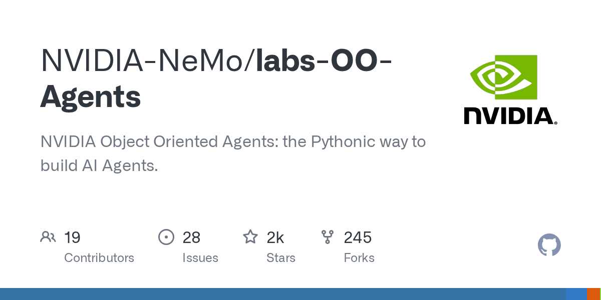
기존 에이전트 프레임워크는 프롬프트 템플릿, 툴 정의, 콜백 등을 분산된 추상화로 관리하는 복잡성을 가지고 있다. 엔비디아가 공개한 NOOA는 단일 파이썬 클래스로 에이전트를 구축하는 객체지향 접근법을 제시한다. 메서드 주석이 프롬프트 역할을 하고 LLM이 동적으로 함수를 실행하는 구조로, 기존 파이썬 개발 방식과 동일하게 pytest와 버전 관리를 적용할 수 있다.
핵심 포인트: 핵심 기여: 파이썬 클래스 기반 단일 인터페이스로 에이전트 상태, 기능, 프롬프트, 타입 인터페이스를 통합 관리하며, 복잡한 프레임워크 구조를 깔끔한 객체지향 개발 패러다임으로 단순화했다.
🔗 github.com/NVIDIA-NeMo/labs-OO-Agents
GitHub
Claude Code — AI 코딩 에이전트의 토큰 비용 최적화 가이드
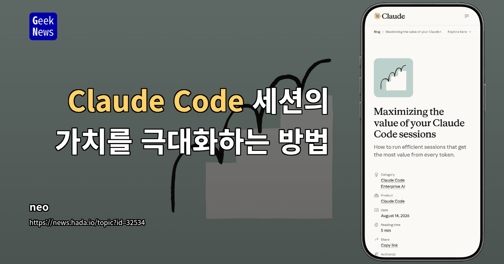
Claude Code 사용 시 동일한 작업도 컨텍스트 관리 방식에 따라 토큰 비용이 크게 달라지는 문제를 해결하기 위한 실무 가이드. 세션 컨텍스트 크기, 턴 수, 프롬프트 캐시 활용을 통해 불필요한 토큰 누적을 줄이고, 파일 첨부 방식, 명령 옵션, 세션 정리 전략으로 실제 작업에 집중된 효율적인 토큰 사용을 구현한다. 출력 토큰이 입력보다 약 5배 비싼 점을 고려하여 모델 크기 선택, 사고 토큰 제어, 캐시 읽기 0.1배 활용으로 비용을 최적화한다.
핵심 포인트: 핵심 기여: 프롬프트 캐시 관리로 읽기 비용을 일반 입력의 0.1배로 절감하고, 필요한 파일만 at-mention 첨부, quiet 옵션 적용, 서브에이전트 활용으로 불필요한 컨텍스트 누적을 제거하며, /clear, /compact 명령과 모델/effort 설정 순서 최적화로 같은 결과를 크게 낮은 비용으로 달성 가능.
기타 (Others)
X Algorithm — For You 타임라인 추천 알고리즘 오픈소스 공개

X가 For You 타임라인의 추천 알고리즘을 오픈소스로 공개하면서 게시물 노출 메커니즘의 투명성을 높였다. 후보 선별, 랭킹, 필터링 코드와 함께 Under the Hood 도구를 제공해 사용자가 자신의 계정과 게시물에 적용된 노출 제한 라벨을 확인할 수 있다. 공개된 랭킹 코드는 좋아요, 답글, 리포스트, 체류시간, 링크 복사 등 사용자 행동별 가중치를 공개하는데, 특히 링크 복사의 보정 폭이 가장 커 유용한 정보 공유가 단순 반응 유도보다 더 광범위하게 배포될 수 있음을 보여준다.
핵심 포인트: 핵심 성과: 알고리즘 코드와 계정별 노출 상태를 동시에 공개하여 사용자가 실제 배포에 영향을 주는 요소를 파악하고 전략적으로 계정을 운영할 수 있게 함. 링크 복사 항목의 높은 가중치로 인해 저장 가능성이 높은 유용한 콘텐츠가 좋아요 중심 콘텐츠보다 더 우선적으로 배포되는 구조 확인 가능.
🔗 github.com/xai-org/x-algorithm
GitHub
Graft — 코딩 에이전트를 위한 컨텍스트 최적화 레이어
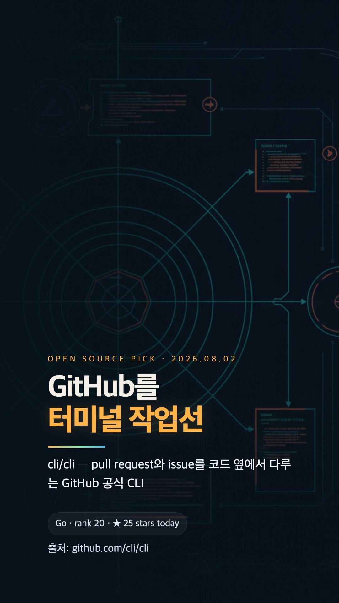
코딩 에이전트가 매 작업마다 코드베이스를 처음부터 탐색하며 토큰과 시간을 낭비하는 문제를 해결하는 오픈소스 도구. Graft는 코드 구조를 마크다운 노드로 미리 파악해 저장하고 재사용함으로써 별도 임베딩이나 외부 서버 없이 토큰 사용량 42%, 실행 시간 60%를 단축한다. Claude Code, Cursor 등 기존 코딩 에이전트에 직접 연결되어 개발 워크플로우 효율을 향상시킨다.
핵심 포인트: 핵심 성과: SWE-bench Verified 테스트에서 정확도 54%에서 66%로 12포인트 개선, 제어된 벤치마크 162회 실행에서 토큰 42% 절감, 실행 시간 60% 단축, 도구 호출 46% 감소.
GitHub
ENGINEERING
SGLang — CUDA Graph 메모리 한계 극복한 고성능 LLM 추론 최적화
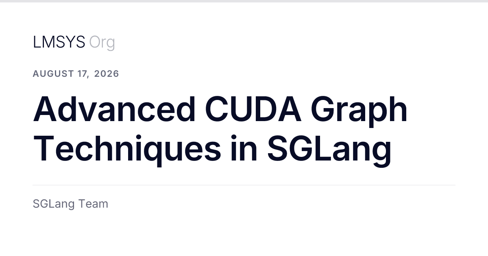
LLM 추론 성능을 위해 CUDA Graph를 활용할 때 메모리 부족과 호환성 문제가 발목을 잡아왔다. SGLang과 Meta는 torch.compile 의존성을 제거한 Breakable CUDA Graph, 동적 프리필 패딩, 메모리 재사용 기법 등을 통해 이러한 실무 페인포인트를 해결했다. 커널 실행 오버헤드를 대폭 줄이면서도 안정적인 고성능 환경을 제공하는 새로운 CUDA Graph 전략이 제시된다.
핵심 포인트: 핵심 기여: Breakable CUDA Graph는 SGLang이 2026년 2월 처음 제안하고 구현한 기법으로, FA4 및 FlashInfer 어텐션 백엔드에서 프리필 단계의 완전한 CUDA Graph 지원을 개척했으며, 메모리 재사용 및 동적 패딩 최적화로 실제 추론 엔진의 성능을 비약적으로 향상시켰다.
🔗 lmsys.org/blog/2026-08-17-advanced-cuda-g…
기타 (Others)
Claude Code — 프롬프트 캐싱으로 토큰 비용 90% 절감하기
Claude Code 사용 시 반복되는 요청에서 매번 전체 대화를 재전송하면서 발생하는 토큰 비용 문제를 프롬프트 캐싱으로 해결한다. 요청의 동일한 앞부분을 캐시에서 읽으면 입력 비용을 90% 할인받을 수 있으며, 모델 변경, effort 레벨 변경, 세션 타임아웃 등으로 캐시가 무효화되지 않도록 관리하면 같은 작업에 소비하는 토큰을 절반으로 줄일 수 있다.
핵심 포인트: 핵심 성과: 프롬프트 캐싱 활용 시 동일 요청의 입력 비용 90% 할인, 같은 작업 반복 시 총 토큰 소비량 50% 감소. 캐시 무효화를 피하기 위해 세션 시작 시 모델과 effort 레벨 확정, 파일 @-mention 사용, 한 시간(API 5분) 이내에 작업 완료해야 한다.
🔗 claude.com/blog/maximizing-the-value-of-y…
기타 (Others)
PRODUCT & INDUSTRY
OCR 4.1 — Document AI 스택을 위한 단락 수준 경계 상자 추출
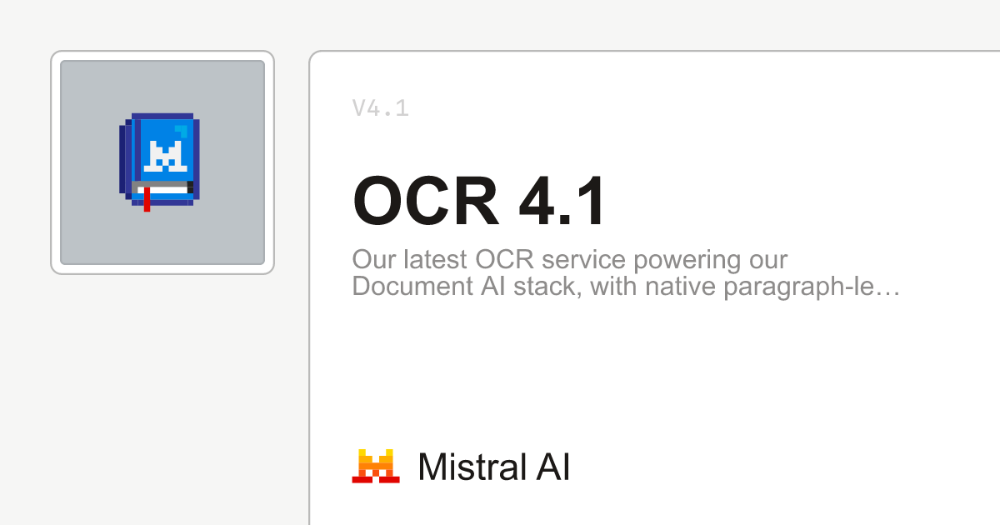
문서 인식 시스템에서 정확한 텍스트 추출과 구조 파악의 필요성을 해결하는 최신 OCR 서비스. OCR 4.1은 기존 문자 인식을 넘어 단락 수준의 경계 상자 추출, 구조적 블록 레이블, 블록 수준 신뢰도 점수를 제공하여 Document AI 스택의 성능을 향상시킨다. 페이지당 4달러의 합리적인 가격으로 제공된다.
핵심 포인트: 핵심 성과: 단락 수준 경계 상자 추출, 구조적 블록 레이블, 블록 수준 신뢰도 점수를 통한 Document AI 스택 강화.
🔗 docs.mistral.ai/models/ocr-4-1
기타 (Others)
Snapr — 무료 스크린 캡처 및 녹화 도구
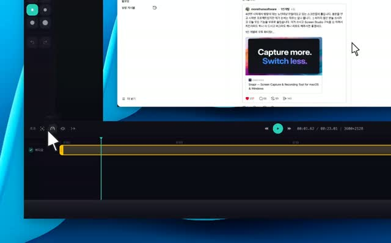
Screen Studio 같은 유료 스크린 캡처 도구를 찾는 사용자들이 무료 대안을 원하고 있다. Snapr는 줌, 모자이크, 디바이스 캡처, 자동 스크롤 stitching, 40개 이상의 배경과 그래디언트 등 전문적인 기능을 제공하면서도 무료로 제공된다. 단일 단축키로 스크린샷, 화면 녹화, iOS 디바이스 녹화를 모두 지원하며, 마크다운 문서나 웹페이지 캡처 후 자동으로 프레임을 이어붙이는 기능으로 완성도 높은 콘텐츠를 빠르게 제작할 수 있다.
핵심 포인트: 핵심 기여: 40개 이상의 배경, 30개 이상의 그래디언트, iOS USB 녹화, 자동 페이지 스크롤 stitching 등 프리미엄 기능을 무료로 제공하며 Screen Studio의 강력한 대체제 역할을 수행.
🔗 github.com/veedstudio/open-edit
기타 (Others)
Claude Managed Agents — 프로덕션 에이전트를 위한 통합 인프라 플랫폼
AI 에이전트를 프로토타입에서 프로덕션으로 올릴 때 프롬프트보다 중요한 것은 호스팅, 세션 관리, 샌드박스, 자격증명, 관찰성 같은 인프라 문제다. Claude Managed Agents는 앤트로픽이 제공하는 통합 솔루션으로, 뇌와 손을 분리한 아키텍처를 통해 모델 로직과 코드 실행을 격리하고, append-only 이벤트 로그 기반 세션으로 상태를 관리하며, 필요할 때만 샌드박스를 생성해 보안과 확장성을 동시에 실현한다.
핵심 포인트: 핵심 기여: 뇌(Claude 모델)와 손(샌드박스)의 분리로 프롬프트 인젝션 공격 방지, 상태 비저장 설계로 컨테이너 내구성 확보, 세 가지 설정 요소(에이전트, 환경, 세션)만으로 프로덕션 배포 간소화.
🔗 claude.com/blog/building-with-claude-mana…
기타 (Others)
OpenAI — 컴퓨터 히스토리 기능으로 사무 업무 자동화의 미래 가시화
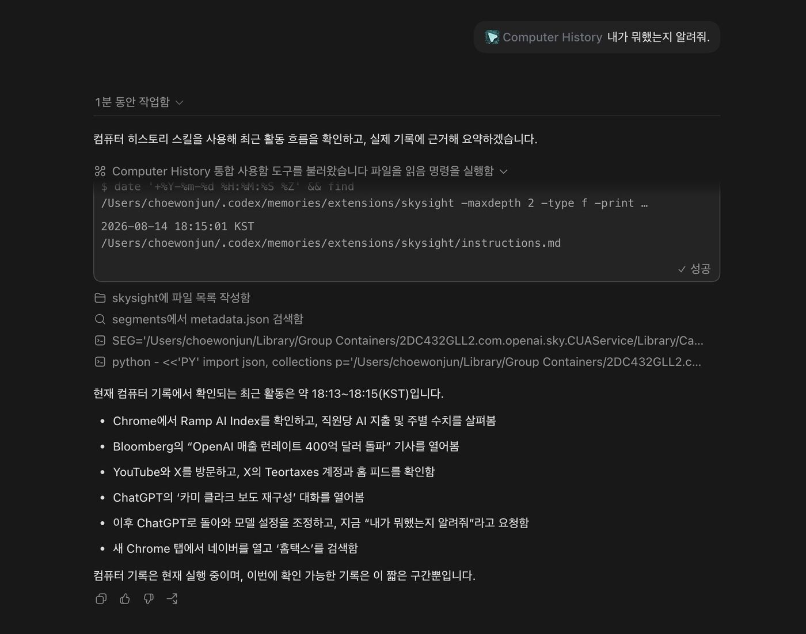
사용자의 컴퓨터 작업 히스토리를 학습하여 반복적인 사무 업무를 자동화하는 OpenAI의 새로운 기능이 등장했다. macOS부터 지원되는 이 기능은 사람들이 실제로 수행하는 작업의 순서와 패턴을 인식하여 업무 생산성을 크게 향상시킬 수 있다. 도입 속도에 따라 조직 간 생산성 격차가 벌어질 수 있으며, 이 과정에서 OpenAI가 축적하게 될 방대한 사무 업무 데이터는 향후 AI 모델 고도화의 핵심 자산이 될 것으로 예상된다.
핵심 포인트: 핵심 기여: 컴퓨터 히스토리 학습을 통해 사무 업무의 자동화를 현실화하며, 조직의 도입 속도에 따라 상당한 업무 생산성 격차 발생 가능성 제시.
🔗 threads.com/@choi.openai/post/DcA_u77kYdF…
기타 (Others)
Trunk Tools — 건설 현장 AI 에이전트로 문서 자동화
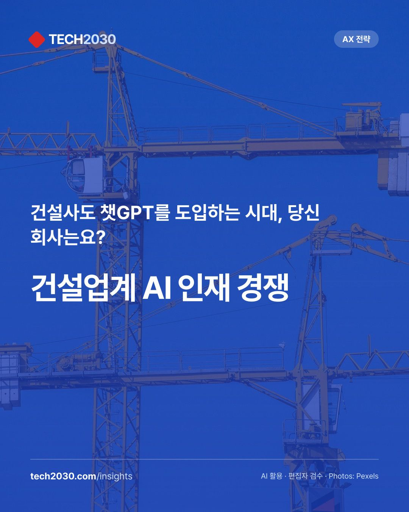
건설 현장의 수백만 페이지 문서 관리는 비효율과 오류의 주요 원인이다. 트렁크 툴스는 LLM 기반 AI 에이전트를 활용해 계약서, 도면, 시방서를 자동 검토하고 충돌을 탐지하며 비용과 공정 파급효과를 실시간 계산한다. 도면 검토에서 발견된 문제를 자동으로 다른 에이전트에 연결해 후속 조치를 즉시 처리함으로써 건설 업계의 문서 업무 자동화를 구현한다.
핵심 포인트: 핵심 성과: 1억 달러 규모 사업에서 400만 달러 추가 비용을 발견해 발주처 변경 요청 철회 유도, 2025년 시리즈B에서 3.25억 달러 기업가치 평가, AI 에이전트 1년간 2개에서 10개 이상으로 확대되며 매출 4배 성장 달성.
🔗 tokenpost.kr/news/tech/390152
기타 (Others)